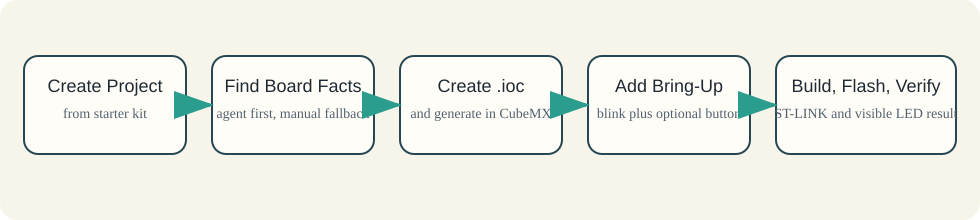

This is the recommended first hands-on scenario for a new STM32 project created from the starter kit.
Treat it as the smallest realistic bring-up path, not as an instant toy proof.
Use it to take a real board, create a real .ioc, generate a real STM32 project, and reach one visible result:
- the user LED blinks
- optionally, the user button changes the blink rate
It still includes real board facts, real CubeMX work, real code generation, and a real firmware change. That is what makes it useful as an honest first win rather than just a scripted demo.
For a larger real-project growth example, use docs/user/project-case-study.md.
Example Flow

Before Phase 1: Check Prerequisites
Do this before creating the project or opening STM32CubeMX.
Use docs/user/prerequisites.md for the actual prerequisite list and installation guidance.
Recommended prompt:
Check whether this machine has the prerequisites required for the STM32 AI Flow starter kit.
Use `docs/user/prerequisites.md` as the reference,
tell me what is already installed,
what is missing,
and what still needs to be configured before I start the simple example.Phase 1: Create the Project from the Starter Kit
Create a normal project from the public starter repo.
Recommended prompt:
Create a normal production project from the public starter.
Project name: <NAME>
Target root: <PATH>
Workflow mode: vendoredAfter creation, the new repo should already contain the workflow layer, including:
AGENTS.mdREADME.mdscripts/skills/.github/- workflow docs under
docs/
At this stage, a new STM32 project usually does not yet have generated Core/, Drivers/, or a real .ioc.
Phase 2: Determine Board Facts
Recommended Path: Let the Agent Search First
Start by asking the agent to identify the board facts from official ST sources.
Recommended prompt:
I have a NUCLEO-<MODEL> board. Find the board facts from official ST sources:
MCU, user LED pin, user button pin, whether ST-LINK is present, and the recommended flashing path.
First show the findings briefly, cite the sources, and flag any uncertainty.
Do not generate anything until I confirm the board facts.Expected result:
Board: NUCLEO-...
MCU: STM32...
User LED: GPIOx Pin y
User Button: GPIOx Pin y
Flash path: ST-LINK
Notes: ...Fallback Path: Enter Board Facts Manually
If the lookup is incomplete or uncertain, provide the board facts manually.
Recommended prompt:
The board facts could not be determined reliably automatically.
Use these board facts manually:
Board: NUCLEO-<MODEL>
MCU: STM32...
LED: GPIOx Pin y
Button: GPIOx Pin y
Flash path: ST-LINK
Keep these facts as the basis for the next step and prepare the CubeMX guidance.Phase 3: Create the Real .ioc in STM32CubeMX
Use the confirmed board facts to create the STM32CubeMX project.
Recommended prompt:
The board facts are confirmed. Suggest the minimal STM32CubeMX setup
for a bring-up project with LED blink and a button for the NUCLEO-<MODEL> board.
Describe only the practical steps needed for this bring-up:
board selection,
LED and button check,
toolchain/project generation settings,
and code generation.In STM32CubeMX:
- Open STM32CubeMX and select your exact Nucleo board.
- Check which pins are assigned to the user LED and the user button.
- Most likely the LED GPIO and the Button GPIO are already configured correctly.
- If one of them is not configured as expected, fix only that GPIO assignment.
- Keep the board's working clock configuration unless you have a reason to change it.
- In
Project Manager, setToolchain / IDEtoCMake. - Save the
.iocin the project repo. - Generate code.
After generation, the repo should now contain:
- a real
.ioc Core/Drivers/- the normal STM32 generated tree
Phase 4: Initialize the Workflow Against the Real .ioc
After the .ioc exists, initialize and validate the workflow.
Recommended prompt:
The `.ioc` now exists in the repo.
Initialize the workflow from this `.ioc`,
then run the toolchain, config, and doctor checks,
and summarize anything I should review before writing application code.After CubeMX code generation, ask the agent to check that the generated files and the workflow state are still aligned.
Recommended prompt:
The code was generated in STM32CubeMX.
Check that the generated files are aligned with the workflow rules
and tell me whether the generated tree is aligned now.If you need the exact wrapper commands behind this step, use docs/reference/workflow-scripts.md.
Phase 5: Add the Minimal Bring-Up Logic
Keep main.c minimal and move behavior into small modules.
After you ask the agent to add the first bring-up functionality, a small first set of project-owned files can be:
Core/
Inc/
app.h
blink.h
board_profile.h
Src/
app.c
blink.c
main.cRecommended prompt:
The project was already created from the starter kit, and the `.ioc` was generated in CubeMX.
Now add the minimal bring-up:
make the user LED blink with a 500 ms period,
and when the user button is pressed, change the blink period to 200 ms.
Keep `main.c` minimal, do not break the generated sections,
and move the logic into separate modules.Phase 6: Build and Flash
After the minimal bring-up logic is added, build and flash.
Recommended prompt:
Build the project, flash the board, and summarize the result.
State clearly what passed, what was skipped, and what still depends on hardware validation.If you want the agent to run the broader default workflow instead of only build plus flash:
Run the normal development workflow for this project
and summarize the result honestly.Phase 7: Verify the Result
Expected observable behavior:
- the user LED blinks with a 500 ms period
- when the user button is pressed, the blink period changes to 200 ms
Recommended prompt:
The build and flash steps are complete. Record the minimal bring-up result:
what should be observed on the board,
which checks already passed,
and what still remains unverified without additional hardware or measurements.Quick Prompt Set
1. Board Fact Lookup
I have a NUCLEO-<MODEL> board. Find the board facts from official ST sources:
MCU, user LED pin, user button pin, whether ST-LINK is present, and the recommended flashing path.
First show the findings briefly, cite the sources, and flag any uncertainty.
Do not generate anything until I confirm the board facts.2. Manual Board Fact Fallback
The board facts could not be determined reliably automatically.
Use these board facts manually:
Board: NUCLEO-<MODEL>
MCU: STM32...
LED: GPIOx Pin y
Button: GPIOx Pin y
Flash path: ST-LINK
Prepare the next step for CubeMX.3. CubeMX Setup Guidance
The board facts are confirmed. Suggest the minimal STM32CubeMX setup
for a bring-up project with LED blink and a button.
Describe only the required practical steps.4. Post-Generation Minimal App
The `.ioc` already exists and the code was generated from CubeMX.
Now add the minimal bring-up:
LED blink and a button to change the blink rate.
Keep `main.c` thin and move the logic into separate modules.5. Result Recording
Record the result of the first bring-up:
what is already confirmed,
what is not yet confirmed,
and which next minimal steps are needed.